This page brings together basic information about the Arabic script and its use for the Iranian Persian language. It aims to provide a brief, descriptive summary of the modern, printed orthography and typographic features, and to advise how to write Persian using Unicode.
Select part of this sample text to show a list of characters, with links to more details.
Change size: 36px
تمام افراد بشر آزاد بدنیا میایند و از لحاظ حیثیت و حقوق با هم برابرند. همه دارای عقل و وجدان میباشند و باید نسبت بیکدیگر با روح برادری رفتار کنند.
هر کس میتواند بدون هیچگونه تمایز مخصوصا از حیث نژاد، رنگ، جنس، زبان، مذهب، عقیدهٔ سیاسی یا هر عقیده دیگر و همچنین ملیت، وضع اجتماعی، ثروت، ولادت یا هر موقعیت دیگر، از تمام حقوق و کلیهٔ آزادیهائیکه در اعلامیه ذکر حاضر شده است، بهرهمند گردد.
The Persian alphabet is a variant of the Arabic script, adapted to meet the needs of the different sounds in the Persian language. It is used to write the Persian language in Iran and Afghanistan.
الفبای فارسیælefbɒːje fɒːrsiːFarsi alphabet
The former Persian Pahlavi scripts were replaced by the Arabic script, but not until some time after the Arab conquest of Persia. It was introduced by the Saffarid and Samanid dynasties in 9th-century Greater Khorasan.
Persian uses the Arabic script, with extensions to covers its wider repertoire of sounds. The Arabic script is an abjad. This means that in normal use the script represents only consonant and long vowel sounds. See the table to the right for a brief overview of features for the modern Persian orthography.
Persian text runs right-to-left in horizontal lines, but numbers and embedded Latin text are read left-to-right.
It is sometimes written using the nasta'liq style of Arabic writing. Glyphs are more drawn out, and the baseline tends to be sloping from word to word.
The script is cursive, and some basic letter shapes change radically, depending on what they join to.
There is no case distinction.
Words are separated by spaces.
Modern Persian uses 36 basic letters to write consonants, some of which are hangovers used to spell words loaned Arabic. For example, there are 2 ways to write t, 3 ways to write s, and 4 ways to write z. Although it is not always easy to guess the vowel sounds in a word, the consonants are largely reliable phonetically. There is mostly a one-to-one correspondance between letters and sounds.
Diacritics are used to indicate the absence of a vowel in consonant clusters, and gemination in vowelled text.
This orthography is an abjad where vowel sounds are written using a mixture of combining marks and letters in vocalised text, but normally the diacritics are not used (and so it is not possible to accurately read the text unless you recognise the consonant patterns). However these diacritics and other phonetic information can be written where needed, and are regularly used for Qur'anic texts, dictionaries, educational materials, and where the pronunciation needs to be made clear. ❯ vowels
Although the vowel diacritics are not normally used, Persian has 3 diacritic code points that can be used to indicate the 'short' vowels, if needed. Long vowels, and word initial and final short vowels are represented using one of 4 consonant letters, although there can occasionally be some ambiguity as to which sounds they represent.
To indicate vowel cluster boundaries and the ezafe conjunction, Persian uses a combining hamza above carrier letters. (A standalone hamza is only used occasionally.) The choice between precomposed and decomposed realisations of characters used for these features has a few complications.
A mandatory ligature is used for combinations of lam + alif.
Persian uses native digits, though the code points are different from those used for the Arabic language, and Arabic code points are used for several of the more common punctuation marks.
Joining forms
Because the Arabic script is 'cursive' (ie. joined-up) writing, letters tend to have different shapes depending on whether they join with adjacent letters or not (see cursive). In addition, vowels can be represented using different characters, depending on where in a word they appear.
In scripts such as Arabic, several characters have no left-joining form. In what follows we'll use the characters ي and د to illustrate shapes. The former can join on both sides, but the latter can only join on the right.
Left-joining glyphs are commonly called initial; dual-joining are called medial; and right-joining are called final. Glyphs that don't join on either side are called isolated. However, these glyph shapes can be found in various places within a single word.
Word-initial characters usually have initial glyph shapes (eg. 064A ). However, characters that only join to the right will use an isolated glyph shape (eg. 062F ).
Furthermore, words beginning with a vowel are always preceded by a vowel carrier, which is normally ا
(eg. 0627 06CC or 0627 064E ).
Word-medial characters will typically join on both sides
(eg. 064A ) but those that only join to the right will use a final glyph (eg. 062F ).
However, if either of those is preceded by another character that only joins to the right, the glyph shapes rendered will be initial (eg. 064A )
and isolated (eg. 062F ), respectively.
In Persian, final glyph forms can also be found in word-medial even though the character would normally join to the left, usually at morphological boundaries, eg. گرگها
. The left joining behaviour is prevented using 200C.
Word-final characters will typically use a final glyph shape (eg. 064A and 062F ).
However, if the previous character joins only to the right, they will use isolated glyph shapes (eg.064A and 062F ).
In all this contextual glyph shaping the basic shapes used for a character can vary significantly in a script like Arabic. This also includes some characters that only have ijam dots in certain contexts.
These are sounds of the Iranian Persian language, and more particularly tend to reflect the Tehran dialect.
Click on the sounds to reveal locations in this document where they are mentioned.
Phones in a lighter colour are non-native or allophones. Source Wikipedia.
Vowel sounds
There are 6 vowel sounds, though there are also allophonic variants. The basic phonemes are as follows:
i, u, and ɒ are regarded as long vowels. e, o, and æ are short.
Consonant sounds
labial
dental
alveolar
post-
alveolar
palatal
velar
uvular
glottal
stop
pb
td
kɡ
ɢ
ʔ
affricate
t͡ʃd͡ʒ
fricative
fv
sz
ʃʒ
xɣ
h
nasal
m
n
approximant
l
j
trill/flap
r
In Iranian Persian ɣ and q have merged into ɣ~ɢ, as a voiced velar fricative ɣ when positioned intervocalically and unstressed, and as a voiced uvular stop ɢ otherwise.wpl,#Phonology
Tone
Persian is not a tonal language.
Structure
tbd
Vowels
Vowel summary
The following table summarises the main vowel to character assigments, in both vowelled and unvowelled forms.
Each table cell shows word-initial, word-medial, and word-final forms from right to left. The glyphs shown are illustrative; alternative shapes may occur (see joining_forms). Click/tap on items to see a list of the components for that cell.
In normal (non-vocalised) text a vowel location is simply not indicated where only a diacritic is shown in the table. Because the sukun is also dropped in non-vocalised text, where a mater lectionis remains it only implies a vowel location, since it may alternatively represent a consonant or a glide.
In word-initial position vowels are attached to ا.
Initial u is rare, as are final æ and o.
Final 0647 and 0648 are only treated as vowels if they follow a consonant sound. If they follow a vowel sound, they revert to their normal consonant value. Unfortunately, since short vowels are only rarely shown, it can sometimes be difficult to tell from the written text whether to pronounce these letters as vowel or consonant.
This is the full set of characters needed to represent the Persian language vowels.
آ␣ا␣ه␣و␣ً␣ٌ␣ٍ␣َ␣ُ␣ِ␣ٓ␣ی
Vowel diacritics
In situations where it is necessary to unambiguously indicate the underlying vowel sounds, the following diacritics can be added to base letters.
ِ␣ُ␣َ
Other diacritics
ً␣ٌ␣ٍ␣ٓ
The doubled vowel diacritic, ◌ً [U+064B ARABIC FATHATAN] is used at the ends of certain Arabic-derived adverbs in vowelled text. It is usually written over an alif, although the vowel sound is short. Examples, لزوماًاصلاً
Other doubled vowel diacritics, ◌ٌ [U+064C ARABIC DAMMATAN] and ◌ٍ [U+064D ARABIC KASRATAN] are not used in Persian, but are taught to support education in the Qur'anwpa,#Tanvin_(nunation).
Persian is normally written without vowel diacritics. As a rule, only long vowels are represented by matres lectionis, except that all vowels in word-initial position are written with or preceded by ا [U+0627 ARABIC LETTER ALEF]. Another exception is a final e, which is written with ه [U+0647 ARABIC LETTER HEH]. (Final a and o are also represented by a consonant, but are rarely found.)
The table shows what sounds each letter may represent in non-vocalised text. Where there are gaps, the sound is just not written.
initial
medial
final
ایـ
iː
ـیـ
iː
ـی
iː
او
ouː
و
uː
و
ouːow
ـه
e
ا
oeæ
ا
ɑː
ا
ɑː
آ
ɑː
Letters mapped to vowel sounds. (The table should be read right-to-left.)
The vowels eoand æ are not marked in medial position, and with the exception of e generally do not occur in word-final position. However, one common word in the Tehran dialect of Persian that does end with æ is
نهnæno
Ezāfe is a grammatical particle used to link words together. It is used between adjectives and nouns. Between a sequence of nouns it is similar in use to the word 'de' in French. It is pronounced ɛ~e or (after a vowel) jɛ.
Ezafe can be written in three ways in vowelled text, however in normal Persian text only the third is visible, because the diacritics are omitted.pm,41
Word-medial Persian vowels are sometimes pronounced without an intervening consonant, but they are normally written as if they are separated by a glottal stop. The glottal stop is written using a hamza and its carrier (see hamza).
زئوس
سؤال
Word-initial standalone vowels are always attached to or preceded by 0627, eg.
اومدن
ایرانی
Vowel length
Long vowels are generally distinguished from short vowels by the use of matres lectionis (see otherV).
Nasalisation
Nasalisation is not a phonemic feature of Persian.
Tones
Persian is not a tonal language.
Vowel absence
ْ
When text is vowelled, ْ [U+0652 ARABIC SUKUN] can be used over a consonant to indicate that it is not followed by a vowel sound, however, like short vowel diacritics, it is only used when it is necessary to disambiguate pronunciation.
اسم
نستعلیق
Vowel sounds to characters
This section maps Persian vowel sounds to common graphemes in the Arabic orthography, grouping them by initial (i), medial (m), and final (f) forms. Click on the character names for examples of usage. Vowel diacritics are shown here, but can be ignored to reflect normal usage in Persian text. Click on a grapheme to find other mentions on this page (links appear at the bottom of the page). Click on the character name to see examples and for detailed descriptions of the character(s) shown.
Sounds listed as 'infrequent' are allophones, or sounds used for foreign words, etc.
Persian follows Arabic in using diacritics to express short vowel sounds, but also rarely uses them in normal text.
Due to the influence of Arabic spelling in loan words, Persian has 2 letters for t, 3 letters for s, 4 letters for z, and 2 letters for h. The most common letter for s is س [U+0633 ARABIC LETTER SEEN], and for z is ز [U+0632 ARABIC LETTER ZAIN].
Glottal stop
In Persian, a glottal stop is commonly written using ع [U+0639 ARABIC LETTER AIN], eg.
معنویعربیشیعه
In other places, Persian uses a hamza (see hamza).
فائده
مؤثر
Hamza
أ␣ء␣ٔ␣ؤ
The hamza (called hamze in Persian) is used to represent a glottal stop, however rather than being written as a single letter it is normally written as a combination of a diacritic and a base letter.
Although it may not be pronounced, the hamza and its carrier also appears between vowels. For example,
فائدهزئوسمؤثرسؤالسوئیس
In the examples above you can see that the hamza+carrier provides a place to put a vowel diacritic for short vowels in vowelled text. Between two long vowels it represents a nominal glottal stop.
In the i sound of the indefinite ending, the hamza may also be used, or alternatively the ending may double the YEH after a long vowel, eg. compare: پایٔیپاییمویٔیمویی
On more rare occasions the hamza may appear over ا [U+0627 ARABIC LETTER ALEF]. This makes it clear that the alef represents a glottal stop, rather than a long vowel.
The hamza is also used over short, word-final vowels for ezafe.
A number of precomposed combinations of base letter and hamza are encoded in Unicode. Many of these decompose and recompose under normalisation as canonical alternatives, but a few do not and need to be treated with care. For information about which precomposed characters are used or not used here see hamza_choices.
Onset consonants
Consonant clusters in syllable onsets are simply written using a sequence of consonant letters.
Final consonants
No special mechanisms are used to write syllable or word final consonants.
Consonant clusters
Consonant clusters in Persian are simply written using a sequence of consonant letters. In vowelled text the consonant(s) without a following vowel may carry a sukun (see novowel).
Consonant length
ّ
In vowelled text, which is rare, geminated consonants are shown using the diacritic 0651 (called tašdid in Persian).
تپه
اولی
When both tašdid and zir are attached to the same base consonant, a common, though not universal, practice is to display the zir below the tašdid, rather than below the base consonant (see the examples just above). Some fonts, such as Amiri, don't do this. (See also context.)
Consonant sounds to characters
This section maps Persian consonant sounds to common graphemes in the Arabic orthography. Click on a grapheme to find other mentions on this page (links appear at the bottom of the page). Click on the character name to see examples and for detailed descriptions of the character(s) shown.
Sounds listed as 'infrequent' are allophones, or sounds used for foreign words, etc.
Modern Arabic text makes use of a relatively large set of invisible formatting characters, especially in plain text, many of which are used to manage text direction. Descriptions of these characters can be found in the following sections:
In the Persian orthography different sequences of Unicode characters may produce the same visual result. Here we look at those, and make notes on usage.
Hamza & precomposed characters
Unicode support for the various uses of the hamza are complicated.u,384 For notes on the usage of the hamza in Persian, see hamza and ezafe.
Canonically-equivalent alternatives
A number of combinations with the hamza diacritic can be represented as either a precomposed character or a decomposed sequence, where the parts are separated in Unicode Normalisation Form D (NFD) and recomposed in Unicode Normalisation Form C (NFC), so both approaches are canonically equivalent. These include the following:
The single code point per vowel-sign is the form preferred by the Unicode Standard and the form in common use for Persian, but either could be used.
Alternatives that are not canonically equivalent
These cases involve precomposed characters that look identical to the sequences used in Persian, however there is a catch because the precomposed characters have canonical decompositions to letters that are not used in Persian.
① The Unicode Standard explicitly recommends use of the decomposed sequence when combining a hamza with HEH (for ezafe). The two precomposed characters on the right are problematic because they decompose to sequences containing ە [U+06D5 ARABIC LETTER AE] or ہ [U+06C1 ARABIC LETTER HEH GOAL], neither of which are appropriate for Persian.
② The precomposed YEH with hamza appears, on the face of it, to be a likely alternative for the sequence on the left. However, the decomposition is to hamza over ي [U+064A ARABIC LETTER YEH] rather than ی[U+06CC ARABIC LETTER FARSI YEH], and that letter is not used for Persian (it doesn't represent the dots in the way FARSI YEH does). In fact, the Unicode Standard requires the precomposed and decomposed forms of the Arabic YEH combined with hamza to never have dots below in any of the joining forms. For this reason, this page uses and recommends the decomposed sequence for yeh+hamza. That said, however, in the wild the precomposed character appears to be widely used.
Content authors should use a separate hamza for these sequences in Persian, even though the precomposed characters look the same visually, because they don't represent the same semantics, and may introduce problems if text is decomposed. However, because approaches may yield exactly the same result when displayed, applications will need to recognise the precomposed characters and treat them or map them to the appropriate sequence. Input mechanisms, on the other hand, can produce one rather than the other, and that choice should be made with advisement.
Confusables & spelling errors
The following lists some common errors found in Persian text due to the similarity of Unicode characters, or perhaps sometimes due to problems inputting the correct character.
① As mentioned in the previous section, Arabic YEH doesn't drop the dots below the letter in isolate and final positions.
② Although they look the same, these are all different characters. The HEH GOAL is used for languages that include Urdu and Kashmiri, whereas the LETTER AE is used for Uighur and central Asian languages.
③ & ④ Again, characters that a font may render exactly the same, but that are based on different base letters.
Although these characters look the same (at least in certain joining forms), they are all different characters, and should not be used interchangeably. If they are used, the ability to search and compare text is impaired unless the application is aware of and takes counter-measures against this substitution.
Numbers
Persian uses the extended arabic-indic digits in the Arabic block.
۰␣۱␣۲␣۳␣۴␣۵␣۶␣۷␣۸␣۹
This is a separate set of characters from those used for Arabic, to accommodate different shaping and directional behaviour. Shapes differ from those of Arabic for the digits 4, 5, and 6.
Arabic
Persian
Urdu
Sindi
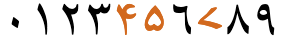
Arabic-indic numerals, as used in Arabic, Persian, Urdu and Sindhi language text.
See expressions for a discussion of how to handle numeric ranges.
The percent sign is typed and stored after the numbers. Like the numeric sequences using the ASCII hyphen (mentioned in expressions), it will appear to the left of a number if that number is preceded by Persian characters. However, if the digits of the percentage appear alone or at the beginning of a line it is necessary to use an ALM formatting character just before them to prevent the sign appearing on the right.
Observation:Wikipedia uses an ASCII percent sign with ASCII digits
Dates
TBD
Currency
The name of the currency is usually spelled out:
ریال
The Unicode Standard does have a symbol code point, FDFC, but it is only a compatibility character for use when converting from Iranian standards, and should not be used in normal Unicode textu,379.
Formatting characters
The Arabic script uses a number of Unicode characters that affect the way that other characters are rendered.
Persian text makes use of a relatively large set of invisible formatting characters, especially in plain text, many of which are used to manage text direction (see directioncontrols), and others are used to control cursive shaping behaviour (see shapingcontrols).
Text direction
Persian is written horizontally and right-to-left in the main, but (as with most RTL scripts) numbers and embedded LTR script text are written left-to-right (producing 'bidirectional' text).
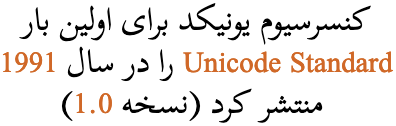
Persian words are read right-to-left, starting from the right of the line, but numbers and Latin text (highlighted) are read left-to-right.
The Unicode Bidirectional Algorithm automatically takes care of the ordering for all the text in fig_bidirectional, as long as the 'base direction' is set to RTL. In HTML this can be set using the dir attribute, or in plain text using formatting controls.
If the base direction is not set appropriately, the directional runs will be ordered incorrectly as shown in fig_base_direction.
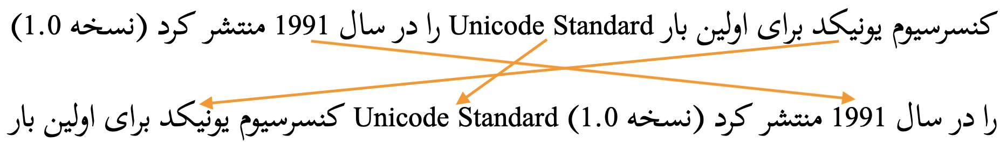
The exact same sequence of characters with the base direction set to RTL (top), and with no base direction set on a LTR page (bottom).
Unicode provides a set of 10 formatting characters that can be used to control the direction of text when displayed. These characters have no visual form in the rendered text, however text editing applications may have a way to show their location.
More recently, the Unicode Standard added a set of characters which do the same thing but also isolate the content from surrounding characters, in order to avoid spillover effects. They are [U+2067 RIGHT-TO-LEFT ISOLATE] (RLI), [U+2066 LEFT-TO-RIGHT ISOLATE] (LRI), and [U+2069 POP DIRECTIONAL ISOLATE] (PDI). The Unicode Standard recommends that these be used instead.
There is also [U+2068 FIRST STRONG ISOLATE] (FSI), used at the start of a range to set the base direction according to the first recognised strongly-directional character.
[U+200F RIGHT-TO-LEFT MARK] (RLM) and [U+200E LEFT-TO-RIGHT MARK] (LRM) are invisible characters with strong directional properties that are also sometimes used to produce the correct ordering of text.
A sequence of numbers separated by hyphens (for example a range) runs from left to right in Persian (unlike Arabic language text).
fig_bidi_range shows some Persian text, which is right-to-left overall, containing a numeric range that is ordered LTR, ie. it starts with ۱۱۶۹ (1169) and ends with ۱۱۷۰ (1170).
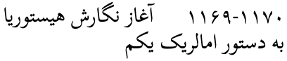
A numeric range in Persian language text.
Certain types of hyphen or other characters can affect the way expressions run, and you need to be aware of that when writing Persian text. For more details see the Expressions & sequences section in the description of the Arabic language orthography.
Glyph shaping & positioning
This section brings together information about the following topics:
writing styles;
cursive text;
context-based shaping;
context-based positioning;
baselines, line height, etc.;
font styles;
case & other character transforms.
The orthography has no case distinction, and no special transforms are needed to convert between characters.
Writing styles
Persian may be written in a nasta'liq writing style. Key features include a sloping baseline for joined letters, and overall complex shaping and positioning for base letters and diacritics alike. There are also distinctive shapes for many glyphs and ligatures.
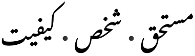
Sloping baselines and complex joining behaviours in Persian nastaliq text.
This is achieved in Unicode by applying the correct font – the underlying characters used are not different for nasta'liq vs. other styles.
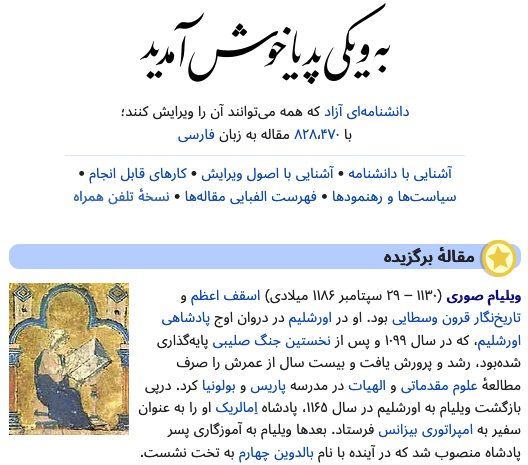
The Wikipedia Persian home page, showing the title in nasta'liq script.
Persian may also be written in several other styles, especially in artistic and historical writing.
Cursive script
Arabic script joins letters together. Fonts need to produce the appropriate joining form for a code point, according to its visual context. This results in four different shapes for most letters (including an isolated shape). The highlights in fig_cursive below show the same letter, ع[U+0639 ARABIC LETTER AIN], with two different joining forms.
A few Arabic script letters only join on the right-hand side.
There are 2 Unicode blocks containing Arabic presentation forms: these contain individual characters corresponding to the various joining forms and ligatures. With only a handful of exceptions, characters in those blocks should not be used for text content; they are only for managing legacy encodings. Instead, characters in the main Arabic block should be used, and the font will manage the necessary cursive shaping.
Cursive joining forms
Most dual-joining characters add or become a swash when they don't join to the left. A number of characters, however, undergo additional shape changes across the joining forms. fig_joining_forms and fig_right_joining_forms show the basic shapes in Persian and what their joining forms look like.
Two pairs of characters in the first table have base shapes that are identical, but they manage the dots differently in different joining forms. These have been put onto separate rows.
isolated
right-joined
dual-join
left-joined
Persian letters
ب
ـب
ـبـ
بـ
ب␣ت␣ث␣پ
ن
ـن
ـنـ
نـ
ن
ق
ـق
ـقـ
قـ
ق
ف
ـف
ـفـ
فـ
ف
س
ـس
ـسـ
سـ
س␣ش
ص
ـص
ـصـ
صـ
ص␣ض
ط
ـط
ـطـ
طـ
ط␣ظ
ک
ـک
ـکـ
کـ
ک␣گ
ل
ـل
ـلـ
لـ
ل
ه
ـه
ـهـ
هـ
ه
م
ـم
ـمـ
مـ
م
ع
ـع
ـعـ
عـ
ع␣غ
ح
ـح
ـحـ
حـ
ح␣خ␣ج␣چ
ی
ـی
ـیـ
یـ
ی
Joining forms for shapes that join on both sides.
isolated
right-joined
Persian letters
ا
ـا
ا␣آ␣أ
ر
ـر
ر␣ز␣ژ
د
ـد
د␣ذ
و
ـو
و␣ؤ
Joining forms for shapes that join on the right only.
Managing glyph shaping
[U+200D ZERO WIDTH JOINER] (ZWJ) and [U+200C ZERO WIDTH NON-JOINER] (ZWNJ) are used to control the joining behaviour of cursive glyphs. They are particularly useful in educational contexts, but also have real world applications.
ZWJpermits a letter to form a cursive connection without a visible neighbour. It can be used for illustrating cursive joining forms, eg. ان س ان Characters from the Presentation Forms blocks in Unicode should not be used in such cases.
ZWNJprevents two adjacent letters forming a cursive connection with each other when rendered, eg. انسان
This is particularly useful for Persian, since certain Persian suffixes don't join with word-final letters when they appear finally in a morpheme, eg.
خانههاتکیهگاه
Click on the words above to see the composition.
To achieve this, you need to use [U+200C ZERO WIDTH NON-JOINER]. It's also possible to sometimes see text where the suffix is written after a space, or simply joined to the end of the word. However, those alternatives are not available when the word ends with ه [U+0647 ARABIC LETTER HEH].§
͏ [U+034F COMBINING GRAPHEME JOINER] is used in Arabic to produce special ordering of diacritics. The name is a misnomer, as it is generally used to break the normal sequence of diacritics.
Context-based shaping & positioning
Context-based shaping is everwhere in Persian due to the combination of the cursive behaviour of the script plus the strong tendency to arrange joined characters in cascades or vertical arrangements.
As in Arabic, lam followed by alef ligates, and there are other such commonly ligated forms.
لاغر
علاوه
Depending on the font, Arabic letters often have special rules for joining between certain characters, and diacritic marks generally vary in height and horizontal position depending on the size of the base character.
Another example of contextual positioning rules is the placement of ِ [U+0650 ARABIC KASRA] (zir) in vowelled text when it appears on the same letter as ّ [U+0651 ARABIC SHADDA] (tašdid). Usually, zir appears below the base letter, and this is how it can be distinguished from َ [U+064E ARABIC FATHA] (zebar). However, when combined, zir may be placed relative to the shadda diacritic, rather than relative to the base character, as seen in fig_kasra_placement.
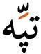
The word تپه with vowel diacritics, showing the zir below the tašdid, rather than below the base letter.
Positioning of cursive joining forms is particularly complicated in the nastaliq style. See more details in the Urdu page.
Font styling & weight
tbd
Graphemes
Grapheme clusters
tbd
Punctuation & inline features
Word boundaries
Words are separated by spaces.
Phrase & section boundaries
،␣؛␣:␣.␣؟␣!
Persian uses a mixture of ASCII and Arabic punctuation.
The words 'left' and 'right' in the Unicode names for parentheses, brackets, and other paired characters should be ignored. LEFT should be read as if it said START, and RIGHT as END. The direction in which the glyphs point will be automatically determined according to the base direction of the text.
Both of these lines use > [U+003E GREATER-THAN SIGN], but the direction it faces depends on the base direction at the point of display.
The number of characters that are mirrored in this way is around 550, most of which are mathematical symbols. Some are single characters, rather than pairs. The following are some more common ones.
(␣)␣<␣>␣[␣]␣{␣}␣«␣»␣‹␣›
Quotations & citations
«␣»
Persian uses guillemets around quotations, but the quotation marks typically have rounded glyph shapes, rather than sharp angles.
Basic line-break opportunities occur between the space-separated words.
They are not broken at the small gaps that appear where a character doesn't join on the left.
Breaking between Latin words
When a line break occurs in the middle of an embedded left-to-right sequence, the items in that sequence are rearranged visually so that the reading direction remains top-to-bottom. latin_line_breaks shows how two Latin words are apparently reordered in the flow of text to accommodate this rule.
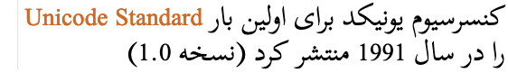
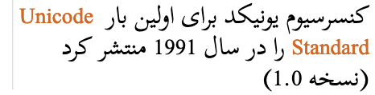
Persian with embedded Latin text. The lower of these two images shows the result of decreasing the line width, so that text wraps between a sequence of Latin words.
In digital text the rearrangement is automatic. Only the positions of the font glyphs are changed: nothing affects the order of the characters in memory.
See the section on justification for the Arabic language.
Text spacing
See the section on text spacing for the Arabic language.
Baselines, line height, etc.
The alphabetic baseline is a strong feature of Arabic script on the whole, since characters tend to join there. The nastaliq style of the script, on the other hand, uses arrangements of joined glyphs that cascade downwards from right to left, and ressemble a strongly sloping baseline.
Counters, lists, etc.
You can experiment with counter styles using the Counter styles converter. Patterns for using these styles in CSS can be found in Ready-made Counter Styles, and we use the names of those patterns here to refer to the various styles.
The Persian language uses 1 numeric and 2 fixed styles.
Numeric
The persian numeric style is decimal-based and uses these digits.rmcs,#arabic-styles
۰␣۱␣۲␣۳␣۴␣۵␣۶␣۷␣۸␣۹
Examples:
۱␣۲␣۳␣۴␣۱۱␣۲۲␣۳۳␣۴۴␣۱۱۱␣۲۲۲␣۳۳۳␣۴۴۴
Fixed
The arabic-abjad fixed style uses these letters. It is only able to count to 28.rmcs,#arabic-styles
Note that the 5th counter includes a zero-width joiner formatting character. This makes the shape distinguishable from ٥ [U+0665 ARABIC-INDIC DIGIT FIVE].
The persian-alphabetic fixed style uses these letters. It is able to count to 32. The letters are arranged by shape.rmcs,#arabic-styles
The 31st counter also includes a zero-width joiner formatting character.
Prefixes and suffixes
Persian lists generally use a full stop suffix as a separator.
Styling initials
tbd
Page & book layout
This section is for any features that are specific to Persian and that relate to the following topics:
general page layout & progression;
grids & tables;
notes, footnotes, etc;
forms & user interaction;
page numbering, running headers, etc.
General page layout & progression
Persian books, magazines, etc., are bound on the right-hand side, and pages progress from right to left.
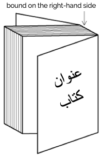
Binding configuration for Persian books, magazines, etc.
Columns are vertical but run right-to-left across the page.
Grids & tables
Tables, grids, and other 2-dimensional arrangements progress from right to left across a page.
Forms & user interaction
Form controls should display Persian text from right to left, starting at the right side of the input field. Form controls should also usually be arranged from right to left.
fig_form shows some form fields from an Arabic language web page. Note the position of the labels relative to the input fields and the checkbox, mirror-imaging a similar page in English. Note also that the input text in the first field appears to the right of the box.
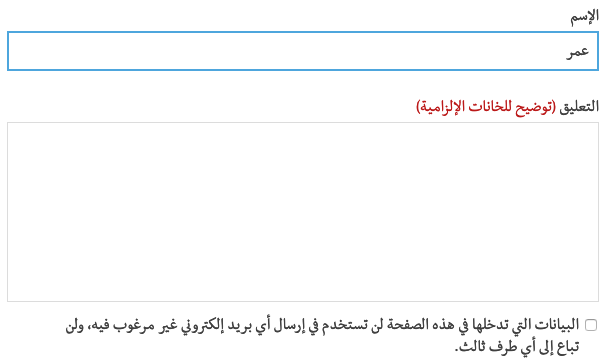
A set of form fields on an Arabic web page
The position of a scrollbar should depend on the user's environment, not on the content of a page. A non-Persian user viewing a web page in Persian shouldn't have to look for the scroll bar on the left side of the window. In a system that is set up for an Persian user, however, the scrollbar may appear on the left.


 [
[ [
[ [
[ [
[ [
[ [
[ [
[ [
[ [
[
 [
[ [
[ [
[